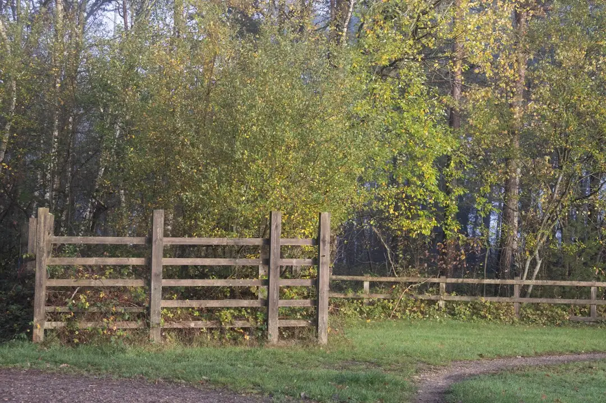

For an Ipswich fencing project, the principal choices are Colorbond® steel and lap-and-cap timber. Include gates, openings and old-fence removal in the initial scope. The total can change with fence length, height, ground levels, footing requirements, access and disposal. A useful quote should identify the fence layout, inclusions, exclusions and timing, with shared boundaries and retaining walls discussed before work is agreed.
When homeowners compare fence gates ipswich options, the practical decision is how the material, openings, boundary conditions and removal work will fit into one written project scope.
Fence Gates Ipswich Explained
The Fencing Contractors describes Colorbond® steel and lap-and-cap timber as the two main starting points for local fencing projects. The timber option uses overlapping palings with a capped finish. Decide by considering the desired privacy, boundary layout and site conditions together, rather than selecting a material in isolation.
Before requesting a price, describe each boundary run. Note the approximate length, corners, short returns and changes in height. If an existing fence is being replaced, explain what is coming out and what boundary you want put back. This gives the installer a clearer basis for discussing the proposed layout.
- Choose the material, or state that you are not sure yet.
- Record approximate length and height changes.
- Identify gates, openings and their approximate widths.
- Note whether old fence removal and disposal are required.
Compare the two common approaches
Colorbond® steel gives the project a panel and post system to discuss, while lap-and-cap timber involves overlapping palings and a capped finish. The useful comparison is not just appearance. Ask how each option will be laid out along the boundary, how height changes will be handled and which components are included.
Gates should be planned with the fence rather than added as an afterthought. Count the openings and describe the approximate width of each one. Hardware and support posts affect the total, so ask for them to appear in the written quote. A narrow access gate and a wider opening may require different discussions about support, movement and the available space.
For a broader view of questions that arise on projects across Australia, read the wider Australian fencing contractor guide.
Site conditions that change the quote
Length and height are starting points, not a complete scope. Slope, changing ground levels, footing requirements, access, gates and removal can alter the work that must be assessed and the inclusions recorded.
Retaining walls need their own conversation. An existing or proposed wall can change the questions around support, levels and responsibility for each part. Ask how the fence relates to the wall, which levels are being used and whether the quoted work includes anything at the wall interface.
Narrow side access, gardens and other obstacles can affect how materials and waste reach the fence line. Photos of corners, level changes, gates and the access route can help explain the site, although an assessment may still be needed before the written scope is settled.
A replacement with a gate, a short return and an uneven section should be described by those features, not only by its total metres. Include the existing fence, disposal requirements, opening width, level change and restricted access in the request.
How to compare written quotes
Compare equivalent scopes before comparing headline figures. Check that each quote refers to the same fence length, height, material, gates and removal work. Then review inclusions and exclusions line by line.
- Fence type, height, length and layout.
- Number of gates, opening widths, hardware and support posts.
- Old fence removal, disposal and any stated limits.
- Ground, footing, level and access assumptions.
- Expected timing and the next assessment step.
The published process asks homeowners to provide the suburb, fence type and approximate length, with photos where available. It describes free quotes and recommends checking availability and arranging the assessment needed for a written scope before agreeing to work.
When two totals differ, ask which assumption caused the difference. The answer may involve removal, disposal, a gate, support posts, access or changing levels. Having that item stated in writing makes the quotes easier to compare.
Who this guide applies to
This guide is for Ipswich homeowners and property decision makers planning a new boundary fence, replacing an existing fence, adding a gate or considering fencing beside a retaining wall. It is most useful while the project is still being defined and before a final scope is accepted.
It is not a stand alone price calculator. The published guidance says the total depends on project details, including length, site conditions and inclusions. If the boundary is shared, read the Queensland Government dividing fence guidance before agreeing to work and clarify the decisions affecting both sides.
Prepare the material preference, approximate length, height changes, gate openings, removal requirements and access details for the next conversation. Before accepting a quote, ask who confirms the boundary, whether disposal is included, what happens if site conditions differ and which timing assumptions depend on availability or assessment.
- Describe the boundary. Send the suburb, preferred fence type, approximate length, height changes, openings and photos of relevant site conditions.
- Check the site. Confirm availability and arrange the assessment needed to turn the initial description into a written scope.
- Compare the quote. Review inclusions, exclusions, removal, gates, access assumptions and timing before agreeing to work.
| Option | Useful starting questions | Quote details to confirm |
|---|---|---|
| Colorbond® steel | What layout, height and openings suit the boundary? | Panels, posts, gates, hardware, footing assumptions and removal |
| Lap-and-cap timber | What overlapping palings layout and capped finish are required? | Palings, posts, gates, support details, access and disposal |
| Existing or proposed retaining wall | How do levels, support and responsibility relate to the wall? | Wall interface, ground levels, footing approach and inclusions |
Common questions
What materials are described for Ipswich projects? The published guidance identifies Colorbond® steel and lap-and-cap timber as the main options. Consider the choice alongside privacy, layout, ground levels and access.
Can a gate be included with the fence? Yes. Gates can form part of the project. State the number of openings and their approximate widths so hardware and support posts can be included in the quote.
Can the old fence be removed? Old fence removal can be included in the quote. Describe the existing material and length, and ask for removal and disposal to be listed clearly.
Are fence quotes free? The published Ipswich guidance says quotes are free. A request should include the suburb, fence type and approximate length, with photos if useful.
What if the boundary is shared? Read the Queensland Government dividing fence guidance before agreeing to work. Clarify the boundary, shared decisions and each party's requirements before accepting the scope.
This guide covers material selection, gates, boundary conditions, quote inputs and comparison questions for fencing projects in Ipswich.